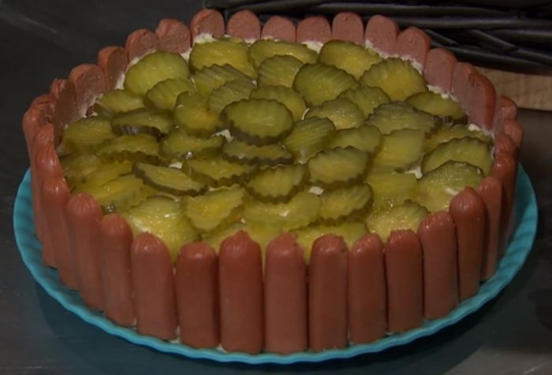

cake

Description
This easy homemade lasagna is pure comfort food and absolutely delicious!The perfect recipe that works well for both a holiday gathering or a cozy weeknight dinner.
Ingredients
- Lasagna Noodles: we're using 12 lasagna noodle sheets for this dish.
- Marinara Sauce: You can use your favorite jarred marinara sauce for this recipe which keeps things nice and easy.
- Zucchini: I like to add a layer of sliced zucchini for an easy way to get in extra veggies.
- Spinach: we're adding a bit of fresh spinach to the meat sauce for even more of those veggies.
- Ground Beef and Italian Sausage: we're making this lasagna extra flavorful by using a combination of ground beef and Italian sausage
- Parmesan Rind: to give the meat sauce even more flavor we're adding in a parmesan rind while the sauce simmers.
- Lemon Juice: this adds a bit more fresh flavor to the ricotta mixture.
- Cheese: a combination of classic ricotta cheese, parmesan, and of course mozzarella.
- Herbs and Seasonings: fresh herbs, Italian seasonings, and loads of fresh garlic.
Step
- Make the Sauce: First, you'll make the meat sauce for the lasagna! Brown the ground beef and then add the aromatics and seasonings. Next, you'll add the marinara sauce, parmesan rind, bay leaf, and simmer for 15-20 minutes. Lastly, you'll stir in the chopped spinach until wilted and set aside while you prep the rest of the lasagna.
- Make the Ricotta Filling: Add the ricotta, lemon juice, black pepper, parmesan, parsley, and chopped basil to a mixing bowl. Stir until well combined.
- Boil the Pasta: Bring a large pot of salted water to a boil. Add the lasagna noodles to the boiling hot water and cook for 8 minutes, stirring occasionally to prevent them from sticking. Remove the noodles from the water and drain.